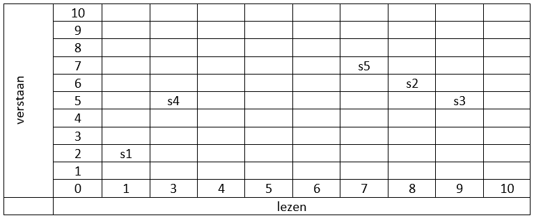
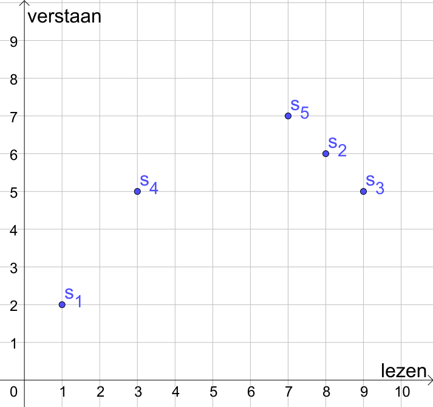

3.5. Clusteranalyse#
Na dit hoofdstuk:
weet je het doel en de taak van clusteranalyse bij datamining.
kun je een paar toepassingen van clustering noemen.
kun je de begrippen datapunt, object, cluster, centrum, centroide, Euclidische afstand, Manhattan afstand en centrum uitleggen .
kun je de afstand tussen zowel twee objecten als twee clusters met behulp van afstandsmaten zoals Euclidische afstand en Manhattan afstand berekenen.
kun je het centrum of de centroide van een cluster bepalen.
ben je in staat de \(K\)-means methode op passende problemen toepassen
weet je dat er ook nog andere clustermethoden zijn.
ben je je bewust van de problemen die bij clustering op kunnen treden
3.5.1. Inleiding#
voorbeeld
👓 Stel er komt een aantal buitenlandse studenten binnen op de hogeschool waar jij als studiecoördinator werkt en jij moet er voor zorgen dat deze studenten worden bijgeschoold in Engels voordat zij mogen beginnen met de rest van de opleiding.
Er zijn twee docenten beschikbaar en je wilt de studenten indelen in twee groepen (een groep noemen we in het vervolg een cluster), groep A en groep B. Bij de indeling wil je clusters maken van studenten van gelijk niveau. De grootte van de clusters is onbelangrijk.
Je wilt indelen op de twee eigenschappen lezen en verstaan van Engels. Je laat daarom alle studenten een test maken waaruit een score van 1 tot 10 komt. Daarbij geef je alleen gehele punten als cijfer.
Om inzicht te krijgen hoe je de clusters kunt indelen zet je de studenten in een schema waarbij de horizontale as het cijfer voor lezen aangeeft en de verticale as het cijfer voor verstaan. In het onderstaande schema zijn de resultaten van de vijf studenten s1 t/m s5 weergegeven.
{kind=link}
Welke clusters zou jij maken?
{kind=link}
De meest logische indeling is om s1 en s4 in groep A te stoppen en s2,s3 en s5 in groep B.
In het voorbeeld was het niet zo moeilijk om te bepalen welke clusters je het best kon maken. Maar wat nu als er veel meer studenten zijn en/of veel meer eigenschappen zijn waar je rekening mee wilt houden?
Clusteranalyse is het classificeren of het groeperen in ‘clusters’ of ‘klassen’ van objecten op grond van hun kenmerken zonder vooraf de clusters vast te leggen. De gebruikte algoritmen bepalen wel de weg om tot clusters te komen, maar de gegevens bepalen welke clusters het worden. Deze algoritmen zijn, net als de algoritmen uit de associatie-analyse, vormen van unsupervised learning (= ongestuurd leren). Het belangrijkste AI-kenmerk is ook hier: de invoer die het programma krijgt, is niet volledig te bepalen en is complex.
Vraag
Wat zijn in het voorbeeld de objecten en de kenmerken?
Antwoord
De objecten zijn de studenten, de kenmerken de resultaten voor lezen en verstaan.
{kind=link}
Het doel van clusteranalyse (trainingsfase) is het vormen van deelverzamelingen (clusters of groepen) die elk hun eigen gedeelde kenmerken bevatten. De clusters en liefst ook het aantal clusters zijn vooraf niet bekend. Het streven is zoveel mogelijk gelijkenis binnen een groep en zoveel mogelijk verschil tussen de groepen te krijgen.
De clusteranalyse levert een aantal groepen, de clusters, op. Op basis van die groepen kun je bepalen tot welke groep een nieuw aan de applicatie aangeboden object behoort. In het voorbeeld van de studenten waren er al twee klassen gemaakt, een nieuwe student wordt dan toegevoegd aan de best passende klas. Een ander voorbeeld zou kunnen zijn dat jij films krijgt aangeboden nadat jij een aantal wensen hebt aangegeven op een website. Van te voren is er al een classificatie van films gemaakt en jij krijgt dan die films voorgeschoteld die in het cluster zitten dat het best bij jouw wensen past.
Men zou ook dit aangeboden object aan de trainingsdata kunnen toevoegen en de clusteranalyse opnieuw uitvoeren. Dit zou kunnen leiden tot een nieuwe groepsindeling. We gaan het hier vooral over de trainingsfase hebben: het algoritme K-means-clustering.
Vraag
Er meldt zich weer een nieuwe buitenlandse student bij de hogeschool, een week na de start van de bijscholing. Deze student haalt een 4 voor lezen en een 3 voor verstaan. In welke groep wordt deze student geplaatst?
Antwoord
Deze leerling past het best in groep A.
Voor we één algoritme (\(K\)-means-clustering) meer in detail uitwerken en jullie laten kennismaken met alternatieven geven we eerst een aantal voorbeelden van terreinen waarin clusteranalyse wordt toegepast. Meer voorbeelden zijn onder andere hier en hier te vinden.
3.5.2. Toepassingen#
Identificatie van nepnieuws#
Nepnieuws is geen nieuw fenomeen, maar het treedt meer en meer op de voorgrond vooral binnen sociale media. Zelfs president Trump schaamde zich niet om zijn campagne met nepnieuws te voeren of ander onwelgevallige berichten tot nepnieuws te bombarderen.
In een artikel gepubliceerd door twee informaticastudenten (Seyedmehdi Hosseinimotlagh en Evangelos E. Papalexakis, University of California, Riverside) wordt een clusteralgoritme gebruikt om nepnieuws te identificeren. Het algoritme krijgt (nep)nieuwsartikelen aangeboden. Uit deze artikelen worden de belangrijkste en meest sensatierijke woorden gevist. Op deze woorden wordt dan geclusterd. Omdat sensatie beluste woorden de aandacht van mensen trekt komen deze woorden vaker voor in nepnieuwsartikelen. De clusters bevatten dus combinaties van dit soort woorden waarmee nieuwe berichten geclassificeerd kunnen worden op mate van nepnieuws.
Biologie#
In de biologie zijn er meerdere gebieden waar clusteranalyse wordt toegepast. Denk bijvoorbeeld aan de classificatie van verschillende organismen. Elk organisme hoort bij een soort. Soorten kunnen op hun beurt weer worden onderverdeeld in lagere taxa, zoals ondersoort en variëteit. Soorten zelf worden samengevoegd in geslachten en deze weer in families en in taxa van nog hogere rang. Een ander voorbeeld van het gebruiken clustertechnieken in de biologie is het maken van groepen met genen die een bepaalde erfelijke ziekte kunnen bevatten. Door het gebruik van clustermethoden kunnen groepen met samenwerkende genen gevonden worden. Als deze groepen bekend zijn, kan deze kennis helpen om meer gericht onderzoek te doen naar medicijnen die een erfelijke ziekte gekoppeld aan de groep genen kan voorkomen of genezen.
Marketing#
Personalisatie en bepaling van doelgroepen in marketing is big business. Dit wordt bereikt door naar specifieke kenmerken van een persoon te kijken en campagnes met hen te delen die succesvol zijn geweest met andere vergelijkbare mensen. Doet een bedrijf dat niet of verkeerd dan loopt het bedrijf de kans niets te verkopen of nog erger het vertrouwen van klanten te verliezen. Clusteranalyse helpt de doelgroepen te bepalen.
3.5.3. Clusters en afstanden#
Om verder te kunnen met de clusteranalyse, hebben we extra begrippen nodig. Het gaat vooral om het begrip ‘afstand’. Hoe meet je nu precies of twee objecten met hun eigenschappen dicht bij elkaar liggen?
Afstandsmaten#
In clustering speelt afstand tussen gegevens een grote rol. Een computer heeft daar meestal getallen voor nodig. Vaak moet er eerst een bewerking van gegevens plaatsvinden om deze om te zetten in getallen. Combinatie van verschillende eigenschappen leveren dan datapunten op in een assenstelsel. Iedere eigenschap heeft zijn eigen as, b.v. leeftijd, sociale klasse, salaris, …
Vraag
Welke assen zijn er in het hogeschool voorbeeld?
Antwoord
Er is een as voor verstaan en een as voor lezen.
Afstand tussen objecten#
Voorbeeld
👓 In ons voorbeeld met de vaardigheden in de Engelse taal zijn er twee assen: luister- en leesvaardigheid. Studenten hebben een toets gedaan waarbij ze een cijfer kregen voor hun vaardigheid. Zo kregen we getallen voor de eigenschappen. We kunnen de cijfers dan in een assenstelsel zetten:
{kind=link}
Vraag: Wat is de afstand tussen \(s_{1}\) en \(s_{4}\)?
Antwoord
De kortste afstand tussen \(s_{1}\) en \(s_{4}\) is \(\sqrt{13}\). Weet je hoe je die afstand berekent? Als je alleen langs de roosterlijnen mag meten dan is de kortste afstand 5. Het is dus van belang eerst een lengtemaat vast te leggen.
{kind=link}
Fig. 3.9 Stelling van Pythagoras#
Hebben we datapunten zoals hierboven dan kunnen we wiskundig de afstand tussen punten uitrekenen. Je hebt waarschijnlijk de vorige vraag beantwoord met de stelling van Pythagoras. De stelling van Pythagoras (Figuur 2) is de manier om de afstand van de schuine zijde in een tweedimensionale rechthoekige driehoek te berekenen. In een assenstelsel vormen de verplaatsingen langs de assen de rechthoekzijden en de lengte van schuine zijde de kortste afstand tussen de punten. Deze afstand noemt men ook wel de Euclidische afstand, ook wel de vogelvluchtafstand. In drie dimensies en hoger wordt op een zelfde manier de afstand tussen twee punten berekend.
🚨 Definitie: Euclidische afstand
De Euclidische afstand tussen twee punten \(A=(a_1, a_2)\) en \(B=(b_1, b_2)\) in het platte vlak is
De letter d gebruiken we voor de afstand (distance). De definitie van de Euclidische afstand kunnen we algemeen maken, voor punten met \(n\) eigenschappen. Je kwadrateert dan de verschillen in al die eigenschappen en doet eigenlijk hetzelfde als bij twee dimensies.
De Euclidische afstand tussen twee punten \(A=(a_{1},a_{2},\dots , a_{n-1}, a_{n})\) en \(B=(b_{1},b_{2},\dots , b_{n-1}, b_{n})\) is:
{kind=link}
Fig. 3.10 Typisch stratenpatroon in Manhattan#
Naast de Euclidische afstand is er een andere maat die vaak gebruikt wordt, de Manhattan of City-block afstand. In figuur 3 zie je een stukje van de kaart van Manhattan. Je kunt alleen van hoek naar hoek komen als je door de straten gaat. In een rooster dus alleen evenwijdig aan de assen.
🚨 Definitie: Manhattan afstand
De Manhattan of City-block afstand tussen twee punten \(A=(a_{1},a_{2},\dots , a_{n-1}, a_{n})\) en \(B=(b_{1},b_{2},\dots , b_{n-1}, b_{n})\) is:
Hierin is \(|x|\) de absolute waarde van \(x\), |2|=2 maar ook |-2|=2, ofwel afstanden zijn altijd positief.
👓 Voorbeeld A
Bereken de Manhattan afstand en de Euclidische afstand tussen de volgende objecten in een 5 dimensionale ruimte:
Object \(A = (10, 12, 15, 13, 9)\)
Object \(B = (18, 23, 13, 15, 17)\)
Om de Manhattan of City-block afstand te bereken moeten we evenwijdig aan de assen lopen langs de eerste as gaan we van 10 naar 18 ofwel afstand 8, dan van 12 naar 23 ofwel 11, etc. Een afstand moet altijd positief zijn, 10-18 en 18-10 moeten beide antwoord 8 geven. Dat doe je door de absolute waarde te nemen van het verschil \(|10-18|=|18-10|=8\). Min wordt plus en plus blijft plus.
De Euclidische bereken je door al de afstanden langs de assen te kwadrateren, deze kwadraten op te tellen en vervolgens de wortel te trekken van het totaal:
Afstandsmatrix#
3.5.4. Afstand tussen clusters#
Als je de afstand tussen elk paar van objecten weet, wat is dan de afstand tussen twee clusters \(C_{1}\) en \(C_{2}\)? We nemen hier de kleinste afstand tussen twee objecten waarvan er één in \(C_{1}\) aanwezig is en de andere in C_{2}. Deze afstand noemt men Single Linkage
Definitie: Single linkage
Single linkage ofwel de afstand tussen twee clusters \(C_1\) en \(C_2\) wordt berekend door het minimum te nemen van alle afstanden tussen punten in \(C_1\) en \(C_2\) . In wiskundige notatie:
Voorbeeld C
Gegeven een dataset met zes punten.
De clusters zijn \(C_{1}=\{A_{1},A_{2},A_{3}\}\) en \(C_{2}=\{B_{1},B_{2},B_{3}\}\). Geef de minimale afstand tussen \(C_{1}\) en \(C_{2}\).
De afstandsmatrix tussen punt uit \(C_{1}\) en punten uit \(C_{2}\) is:
De kleinste afstand en dus de afstand tussen \(C_1\) en \(C_2\) is de kleinste afstand in de matrix:
3.5.5. Centrum van een cluster#
Als we straks na de training clusters hebben gevormd en willen bepalen in welk cluster een nieuw object moet worden geplaatst is het heel efficiënt om een cluster op een bepaalde manier samen te vatten. Het centrum \(M(m_{1},m_{2}, \dots, m_{n})\) van een cluster bestaande uit \(k\) punten wordt die samenvatting. Het centrum is een punt \(M\) met \(n\) coördinaten \(m_{1},m_{2}, \dots, m_{n}\) en wordt berekend door het gemiddelde te nemen van al de coördinaten van de punten in de cluster. Wiskundig gezien is het centrum het zwaartepunt van de veelhoek ( een lichaam in hogere dimensie) die door de punten wordt gevormd.
Definitie: Clustercentrum
Centrum \(M\) van een cluster:
Hierin is \(a_{ij}\) de waarde van de \({j}\)-de coördinaat van het \(i\)-de punt in de cluster, \(j=1,2,\cdots,n\) en \(i=1,2,\cdots,k\).
Voorbeeld
Gegeven een cluster \(C\) die de volgende objecten bevat:
Bereken het centrum van de cluster \(C\).
Het centrum komt uit de volgende berekening:
Dat ziet er lastig uit maar \(x\) is niets anders dan het gemiddelde van de \(x\)-coördinaten en \(y\) is niets anders dan het gemiddelde van de \(y\)-coördinaten van de punten:
Het centrum \(M\) is dus het punt:
3.5.6. \(K\)-means-clustering#
{kind=link}
Fig. 3.11 Animatie van k-means clustering#
Er zijn verschillende methoden die gebruikt worden om tot clusters te komen. We presenteren hier K-means-clustering. In figuur 4 zie je een animatie van de werking, waarbij de data stap voor stap in drie groepen wordt verdeeld. De kleuren geven de clusters aan en de kruisjes die je ziet bewegen zijn de centra van de clusters.
K-means clustering is een eenvoudige en relatief snelle iteratieve manier van clusteren. Het is het oudste en meest bekende clusteralgoritme. Later zijn er veel varianten van deze methode ontwikkeld die het clusteren weer net wat sneller, slimmer aanpakken. Het gaat te ver om die hier te bekijken.
Je bepaalt vooraf hoeveel clusters je wilt krijgen, bijvoorbeeld \(k=3\). De clustering (training) op basis van de gegevens levert dan die clusters die worden samengevat door de bijbehorende centra.
Het algoritme meet veel afstanden, we passen het daarom toe op punten in het platte vlak, zodat je met pen, papier en liniaal eenvoudig het algoritme na kan spelen.
{kind=link}
Fig. 3.12 K-means clustering algoritme#
In figuur 5 staat het stroomdiagram van het algoritme dat we hieronder in meer detail beschouwen.
Om de optimale(???) clustering te vinden ga je als volgt te werk:
Start: Kies de centra van de clusters de eerste keer willekeurig en bepaal het maximaal aantal stappen dat je toestaat.
Daarna bepaal je van elk datapunt de afstand tot ieder centrum, en wijs je ieder datapunt toe aan de cluster waarvan het centrum het dichtstbij is.
Als er punten zijn die in de vorige stap van cluster zijn veranderd en je nog niet voorbij het vooraf gekozen maximum aantal iteraties bent gekomen dan ga je naar stap 3. Anders ben je klaar.
Alle datapunten zitten weer in een cluster. Er zijn datapunten die in een andere cluster terecht zijn gekomen. De centra zijn dan niet voor alle clusters meer hetzelfde en moeten dus opnieuw worden berekend. Hiervoor gebruik je voor ieder cluster apart de volgende formule:
\(n\) is dan het aantal elementen in één cluster.
Met die nieuwe centra veranderen ook weer de afstanden van de datapunten tot die centra en moet je dus het hele proces vanaf stap 2 weer herhalen, ofwel start de volgende iteratie.
Leuk zo’n verhaal maar voorbeelden maken het inzichtelijker.
👓 Voorbeeld E
Gegeven zijn de volgende vier objecten:
We bepalen vooraf dat we twee clusters willen, dus \(k=2\). Bepaal met het \(K\)-means algoritme een geschikte clustering. Als afstandsmaat gebruik je de normale (Euclidische) afstand.
Start
Kies twee willekeurig centra. \(M_{1}=(4,4)\) en \(M_{2}=(6,2)\) voor respectievelijk de clusters \(C_{1}\) en \(C_{2}\). Dit geeft de figuur hieronder.
Iteratie 1
Bepaal de afstanden van de datapunten tot de centra en plaats de datapunten in het juiste cluster. Een punt komt in het cluster waarvan de afstand tussen het punt ne het centrum het kleinst is. De afstandsmatrix wordt:
Klap dit uit voor een heel handige tip!
Als je op een ruitjesblaadje de situatie hierboven natekent, dan kun je de afstanden ook meten met een liniaal in plaats van iedere keer Pythagoras te moeten doen. Dat scheelt heel veel tijd. Het hoeft in deze voorbeelden en de opgaven er na echt niet heel precies.
De nieuwe clusters zijn:
Bereken de nieuwe centra:
We hebben nieuwe centra we moeten verder bij stap 1
Iteratie 2
Bepaal de afstanden van de datapunten tot de centra en plaats de datapunten in het juiste cluster. De afstandsmatrix wordt:
Alle datapunten zitten in hetzelfde cluster uit de vorige iteratie. De clusters zijn niet veranderd er zijn dus ook geen nieuwe centra. We kunnen stoppen. Het doel is bereikt. De geschikte clustering is:
Met centra
Voorbeeld F
Gegeven zijn de volgende vijf objecten:
We bepalen vooraf dat we twee clusters willen, dus \(k=2\). Bepaal een juiste clustering. Als afstandsmaat gebruik je de normale (Euclidische) afstand. Bepaal na afloop van de clustering in welk cluster het punt P=(1,1) wordt geplaatst.
Start
Kies twee willekeurig centra. \(M_{1}=(2,2)\) en \(M_{2}=(3,0)\)
Iteratie 1
De afstandsmatrix wordt:
De nieuwe clusters zijn:
De nieuwe centra zijn:
Iteratie 2
De afstandsmatrix wordt:
De nieuwe clusters zijn:
De nieuwe centra zijn:
In het plaatje na iteratie 2 zie je eenvoudig in dat een derde iteratie niet tot een verandering van clusters zal gaan leiden. De iteratie moet een computer wel uitvoeren. Maar jij als mens ziet dat in deze situatie in één oogopslag. Dus de juiste clusters met bijbehorende centra zijn:
Om te bepalen tot welk cluster het punt P=(1,1) behoort berekenen we de afstand van P tot M_1 en M_2.
P wordt ingedeeld bij het cluster behorende bij het dichtstbijzijnde centrum, \(C_1\).
Keuze van startpunten. De keuze van de startpunten voor de centra is willekeurig, maar ze moeten wel een beetje in de buurt van de objecten liggen. Als een cluster leeg blijft kan het algoritme niet goed werken, het geeft zelfs een fout. Een simpele keuze is gewoon een paar punten uit de lijst van objecten te nemen.
Maximaal aantal iteraties. Ten tweede is er het aantal iteraties. Bij grote puntenwolken kan het algoritme heel lang doorgaan, waarbij steeds minder punten van cluster wisselen. Er verandert dan op den duur weinig meer en je kunt net zo goed stoppen. Wat ook kan optreden is dat een object in een oneindige herhaling per iteratie van cluster wisselt. Om dergelijke problemen te voorkomen kun je een maximaal aantal iteraties opgeven.
Opdracht 1
Gegeven is een dataset met 6 datapunten:
Als afstandsmaat gebruiken we de normale (Euclidische) afstand.
(a) Bereken de Euclidische afstand van \(A_{1}\) en \(A_{2}\)
Antwoord
(b) We clusteren deze gegevens in twee clusters:
Vul de volgende afstandsmatrix in:
Antwoord
(c) Geef de afstand tussen de clusters \(C_1\) en \(C_2\)
Antwoord
De afstand tussen \(C_1\) en \(C_2\) is de kleinste afstand in de tabel dus: \(d(C_{1},C_{2})=5.57\)
(d) Bereken de centra van de clusters \(C_1\) en \(C_1\)
Antwoord
Opdracht 2
Gegeven zijn de volgende vier objecten:
Als afstandsmaat gebruiken we de normale (Euclidische) afstand. We willen deze gegevens clusteren in twee clusters (k=2), met behulp van het K-means algoritme. Start met de clusters:
(a) Bereken het centrum \(M_1\) van \(C_1\) en het centrum \(M_2\) van \(C_2\).
Antwoord
(b) Maak een tekening van de situatie en vul de volgende afstandsmatrix in en bereken daarmee de afstand tussen clusters \(C_1\) en \(C_2\) :
Antwoord
Dus de afstand \(d(C_{1},C_{2})=2\)
(c) Bereken de afstanden tot de centra \(M_1\) en \(M_2\) en vul de volgende tabel in:
Antwoord
(d) Wat zijn uiteindelijk de clusters van het K-means algoritme?
Antwoord
De clusters na iteratie 1 zijn:
Met centra:
Iteratie 2: bepaal de afstanden tot de nieuwe centra
Clusters zijn gelijk gebleven. Dus een juiste clustering is:
Opdracht 3
Gegeven zijn de volgende 6 datapunten:
\begin{array}{l|ll} & x_{1} & x_{2} \ \hline D_{1} & 6 & 3 \ D_{2} & 2 & 3 \ D_{3} & 5 & 4 \ D_{4} & 9 & 1 \ D_{5} & 8 & 2 \ D_{6} & 8 & 0 \end{array}
Als afstandsmaat gebruiken we de normale (Euclidische) afstand. We willen deze gegevens clusteren in drie clusters (k=3), met behulp van het K-means algoritme. Initialiseer het algoritme met de clusters:
(a) Bereken het centrum \(M_1\) van \(C_1\) , het centrum \(M_2\) van \(C_2\) en het centrum \(M_3\) van \(C_3\).
Antwoord
(b) Bereken de afstanden van de datapunten tot de centra \(M_1\), \(M_2\) en \(M_3\) vul de volgende tabel in en voer zo nodig een herclustering uit:
Antwoord
Er is de herclustering:
(c) Wat zijn de nieuwe centra en zijn we nu klaar?.
Antwoord
De afstand tussen de nieuwe centra en de datapunten zijn nu:
Er is weer verandering in de clustering, met:
Er is dus minstens nog een iteratie nodig.
Opdracht 4
Gegeven de volgende vier objecten:
Als afstandsmaat gebruiken we de normale (Euclidische) afstand. Cluster de gegevens volledig in twee clusters (k=2), met behulp van het K-means algoritme. Bepaal na afloop bij welk cluster het punt P=(5,5) wordt ingedeeld.
Wees verstandig en maak tekeningen zoals in het voorbeeld en gebruik je liniaal om afstanden te meten.
Initialiseer het algoritme met de willekeurige centra:
Vul je resultaten in onderstaande tabel in:
Antwoord
Iteratie 1:
Iteratie 2:
Iteratie 3:
Geen verandering clustering dus klaar:
Voor P=(5,5) geldt nu de afstandsmatrix met als conclusie een toewijzing aan cluster \(C_2\):
Opdracht 5
Een reisagentschap wil zijn klanten opdelen in twee clusters (k=2), op basis van leeftijd en duur van geboekte vakanties. De informatie van het reisagentschap is gegeven in de onderstaande tabel. De leeftijd van klanten uitgedrukt in aantal jaren, de duur van de vakantie in het aantal dagen.
Als afstandsmaat gebruiken we de normale (Euclidische) afstand. Cluster de gegevens volledig in twee clusters (k=2), met behulp van het K-means algoritme. Initialiseer het algoritme met centra:
Vul je resultaten in onderstaande tabel in.
Antwoord
Iteratie 1:
Iteratie 2:
Iteratie 3:
Iteratie 4:
Geen verandering clustering dus klaar:
Opdracht 6
Hieronder staan gegevens van 4 (fictieve) studenten van een data mining cursus. We noteren respectievelijk het aantal bijgewoonde lessen, het aantal dagen examenvoorbereiding, en of ze al dan niet voor het examen kwamen opdagen:
\(D=\{S_{1}(0.0,0,1),S_{2}(7.8 ,2,1),S_{3}(4.8,2,1),S_{4}(3.0,0,1)\}\)
We willen deze objecten clusteren met de K-means methode. Kies k=2, en als initiële willekeurige cluster centra: \(M_1=(0.6,1,0)\) en \(M_2=(7.2,1,0)\). Pas de K-means methode toe op \(D\) tot een maximum van 3 stappen. Noteer voor elke iteratie welke clusters gevormd worden en wat de centra zijn.
Convergeert de methode? Zo ja, leg uit.
Vul de resultaten in de onderstaande tabel in:
Antwoord
Iteratie 1:
Iteratie 2:
De clusters zijn ongewijzigd, binnen 3 stappen is er convergentie.
3.5.7. Andere methoden#
Als het K-means algoritme zo eenvoudig en snel is, waarom zijn er dan, zoals eerder genoemd, andere clusteralgoritmen? Het antwoord hierop is dat er dataverzamelingen zijn die niet passen bij het K-means algoritme. Bekijk maar eens het volgende plaatje.
{kind=link}
Fig. 3.13 Verschillende verdelingen datapunten (bron) en algoritmen.#
(bron: https://towardsdatascience.com/the-5-clustering-algorithms-data-scientists-need-to-know-a36d136ef68)
De eerste kolom hoort bij een \(K\)-means variant. Alleen de verdeling in de vijfde rij past daar echt goed bij. Welk algoritme denk jij dat bij de verschillende rijen het beste past? Er zijn een aantal algoritmen die bij meerdere verdelingen goed scoren, maar die hebben weer andere minpunten. Het is dus van belang om te controleren of je de juiste versie kiest. Heb je meer dan twee assen dan wordt een visuele inspectie zoals in de figuur al een stuk lastiger.
De clusteralgoritmen kunnen worden onderverdeeld in partitiemethoden en hiërarchische methoden. In de partitiemethoden staat clustering met een centrum centraal. Het \(K\)-means valt in deze groep. In de hiërarchische methoden zijn naaste buren belangrijker. Deze buren vormen dan een stamboom vergelijkbaar met een indeling in het dierenrijk. Iedere splitsing vormt op dat niveau een cluster. In figuur 6 is Agglomerative Clustering daarvan een voorbeeld.
Voor een eerste kennismaking met clustering is het voldoende te weten dat er verschillende methoden zijn en dat deze allen iteratief werken en op afstandsmaten zijn gebaseerd. Wil je je in deze cursus meer verdiepen in clustering dan zijn de verdiepingsopdrachten hieronder een startpunt.
3.5.8. Vragen en opdrachten#
Vraag 1#
Wat is het verschil tussen hiërarchische methoden en partitiemethoden?
Antwoord
In hiërarchische wordt een stamboom gevormd op basis van nabijheid tot omliggende punten, bij partitiemethoden worden puntenverzamelingen gevormd op basis van afstand tot centra van de die puntenverzamelingen.